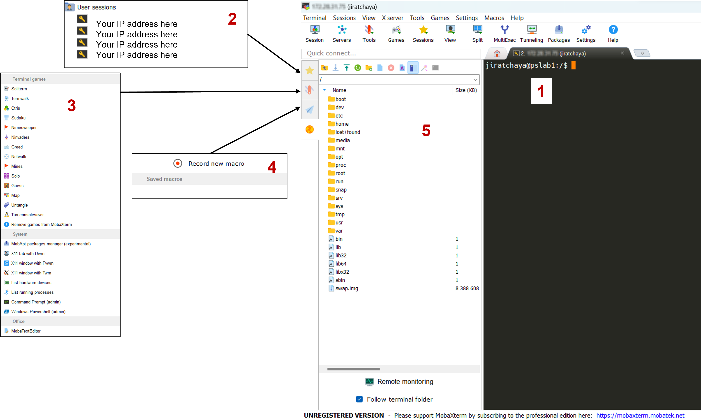
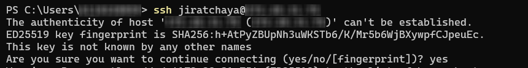

1 Introduction to MobaXterm, Terminal, and SSH
1.1 MobaXterm (for Windows)
MobaXterm is a toolbox for remote computing. In a single Windows application, it provides loads of functions that are tailored for programmers, webmasters, IT administrators and pretty much all users who need to handle their remote jobs in a more simple fashion. MobaXterm provides all the important remote network tools, such as SSH, X11, RDP, VNC, FTP, MOSH, and of course, Unix commands, and many more!

There are many advantages of having an All-In-One network application for your remote tasks, e.g. when you use SSH to connect to a remote server, a graphical SFTP browser will automatically pop up in order to directly edit your remote files.
Visit MobaXterm official website to see a demo: https://mobaxterm.mobatek.net/demo.html
1.2 Terminal (for macOS)
Terminal provides a command-line interface to macOS. Each window in Terminal represents an instance of a shell process. The window contains a prompt that indicates you can enter a command. The prompt you see depends on your Terminal and shell settings, but it often includes the name of the host you’re logged in to, your current working folder, your user name, and a prompt symbol. For example, if a user named michael is using the default zsh shell, the prompt appears as:
michael@MacBook-Pro ~ %This indicates that the user named michael is logged in to a computer named MacBook-Pro, and the current folder is his home folder, indicated by the tilde (~).
MacOS features a built-in SSH client called Terminal which allows you to quickly and easily connect to a server. Starting from open the “terminal” app, and enter the standard SSH command:
ssh user@IPAddressThis will connect to the server via SSH with the username `user` and the default SSH port 22. The connection will look similar to the following:
1.3 Connecting to Remote Server
Bioinformatics data processing tasks require more computing power than our laptops, so we need large servers or clusters. It’s likely you’ll work mostly over a network connection with remote machines on some projects. It can be frustrating for beginners to work with a remote machine. So, This part will introduce you to some commonly used bash commands. To make it easier for beginners to manage their remote machines, there are a range of different tools and technologies available, such as SSH, FTP, and terminal commands, which can be used to access and manage the environment of the machine. Additionally, there are a variety of bash commands which can be used to streamline the process of managing the machine.
What you need to know for connecting to a remove server:
Your username and password in the remote server
IP address of the remote server, and which port to connect to server
You should know whether the remote server accessible via local network or a public IP address
By default, SSH uses port 22 but it can be changed to a non-standard port. To securely connect the client to the remote server, SSH uses symmetric encryption, asymmetric encryption, and hashing. If you’re connecting for the first time, you’ll be asked to verify the server’s public key. Whenever you connect to the same server in the future, the client will reference this verified public key. During an SSH connection, the client and server negotiate a session key used to encrypt and decrypt data.

Upon connecting to the remote server, you’ll see a welcome message like this